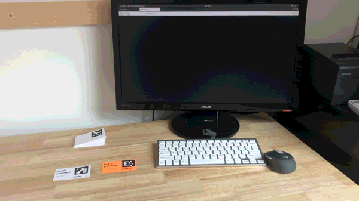

September 25, 2021

Recently I have been wishing that more people could make cool programmable space demos like musical posters or custom plant watering dashboards. However when I tried to write tutorials for them I realized how complex things had become. Does my goal of expanding the idea of a computer outside a little rectangle screen come at the cost of making computing more complicated? Most demos I do now use multiple computers, custom electronics, and custom 3D prints but I am able to understand it because I have grown with my space. The video "Can we Improve Tutorials for Complex Games?" from the Game Maker's Toolkit channel gave me a burst of inspiration to make it clearer how someone can grow a programmable space from something simple.
The video talks about how strategy games like A Total War Saga: Troy require learning a lot of information before playing the game and how trying to explain all the concepts before getting to play isn't fun. The suggestion that resonated with me the most was making a simpler, but complete game and then extending it with expansion packs or new game elements later. The game Mini Metro is an example of a game that does this. Mini Metro is a strategy simulation game about designing a subway map for a growing city. The game starts out with just a couple types of roads. As the game progresses, types are added to build complexity and more interesting challenges only after you have had more play time. This also reminds me of Gall's Law: "all complex systems that work evolved from simpler systems that worked."
Examples of complexity that I have grown into but would make someone new to a programmable space frustrated and overwhelmed:
I have been working on a simpler way to get started with Programmable Space that runs on a single computer, doesn't require a projector, and requires no calibration while still achieving the goal of making programs physical objects.
Updated tutorial: Getting Started with a Programmable Space
In this simpler setup, I switched from RFID cards and Dynamicland-style papers with colored dots to ArUco markers taped to trading card sized papers. Computer vision on a webcam image identifies the ArUco markers and that is mapped to which programs should be running. These ArUco paper cards are cheap (as opposed to the RFID cards), robust to challenging lighting conditions (something I struggled with for the colored dot detection), and many can fit on a desk. Ideally physical the programs should also contain their source code, but I relaxed on that idea for this basic setup. This avoids the complexity of printing and most program source code is too long to fit on a card anyways. I also liked the personal element involving the author's handwriting and drawings.
For this simpler setup I also switched the programs used to edit programs, show graphics, and debug programs from being made within the programmable space system to using a web page interface. It is possible and cooler to build all of these tools within the programmable space's inputs and outputs but integrating things like graphics and keyboard inputs add complexity. With a browser, all of these things come for free at the cost of keeping people in the "traditional single screen and single keyboard" mode that programmable spaces are trying to break away from.
Next, I thought about how to grow a programmable space from this simpler start. The first jump in complexity comes in choosing to add projected augmented reality, use multiple computers, or program microcontrollers. After that, each of these areas can be combined and extended.
An example progression that I would do if I started over:
Every programmable space should be different and match the people in the space. I have a background in making electronics and product design so I have played in those areas. Other people could be more interested in making musical instruments, augmenting their existing school lessons, making escape-the-room games, etc. Each of these would have a totally different progression but I think the core concepts of a programmable space transfer well to all of them.
If you are interested, try setting up the basic space by following the instructions in the programmable-space README. And then you can read my notes about how I extended my programmable space. I will continue making programmable objects in my own space but I would also like to help other people start their own spaces!
Check out more programmable space demos at programmable.space. If you have thoughts or questions, feel free to email or reach out to me on Twitter.